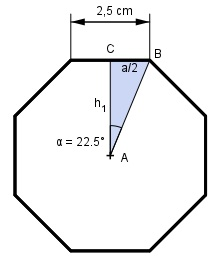

Aufgabe 53 Berechnen Sie das Volumen V eines Prismas mit einer Höhe h von 5 cm und einem regelmäßigen Achteck mit einer Seitenlänge a von 2,5 cm als Grundfläche.  Das regelmäßige Achteck besteht aus 8 gleich großen gleichschenkligen Dreiecken mit der Fläche G: V = 8 * G * h 360° Der Mittelpunktswinkel bei A beträgt ------- = 45° --> α = 22,5° 8 a * h1 G = -------- 2 Im rechtwinkligen Dreieck ABC gilt: a/2 tan α = ---- |*h1 h1 h1 * tan α = a/2 |:tan α a 2,5 cm 2,5 cm h1 = ----------- = --------------- = ------------- = 3 cm 2 * tan α 2 * tan 22,5° 2 * 0,4142 2,5 cm * 3 cm G = ----------------- = 3,75 cm² 2 V = 8 * 3,75 cm² * 5 cm = 150 cm³